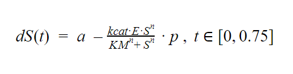

To describe the SALSASMILE project idea, we used several in silico approaches. All simulations and constants are documented by our team, to allow for replicative outcomes.
To describe the SALSASMILE project idea, we used several in silico approaches. All simulations and constants are documented by our team, to allow for replicative outcomes.
Introduction
First, we applied Multiple Sequence Alignment (MSA) to find similarities between the repetitive domains in the SALSA protein. (Ranganathan et al. 2019) (Supplementary material 1: Supplementary MSA). We used the solvent-accessible surface area (SASA) method for the domains sequences’ alignment to classify the SALSA’s amino acid residues as hidden from or exposed to the solvent and thus also the protease (Supplementary material 2: Supplementary SASA 1, SASA 2). These predictions helped us to find accessible sites to narrow down the list of candidate protease target sequences. (Ali et al. 2014) Following the MSA and SASA, several systems of ordinary differential equations were implemented (Hughes et al. 2011). First, to analyze the SALSA concentration oscillations in the mouth. Secondly, to simulate the activity of the candidate proteases. And thirdly, to model the protease neutralization and diffusion in the saliva
Analysis of solvent accessibility and potential target sequences
The MSA approach was useful to screen the regions critical for dental agglutination of bacteria: SRCR 1-13 and SID domains of the SALSA protein. For this purpose, we utilized Clustal Omega software (Madeira et al. 2019) and SALSA sequence obtained from Uniprot (Uniprot, n.d.) database. The MSA revealed that the bacteria binding site along with the Ca2+ cofactor binding site and hydroxyapatite binding site are conserved in all SRCR 1-13 domains (Supplementary alignment 1). The SID domains appear to be less conserved (Supplementary alignment 2). SALSA three-dimensional structure (Jumper et al. 2021) was used in the GetArea software for the SASA application (Fraczkiewicz & Braun 1998), which analyzes SALSA residues’ solvent accessibility (RSA) (Supplementary material 2: Supplementary SASA 1, SASA 2).
Afterwards, MSA of SALSA regions was analysed considering RSA. It was revealed that all bacteria-binding sites in the SRCR domains each contain 7 residue types with maximal accessibility for a protease: Glycine (G),Asparagine (N),Proline (P),Glutamine (Q),Arginine (R),Serine (S),Threonine (T) (Supplementary alignment 3) and every SID contains 3 residue types with maximal accessibility: Glutamic Acid (E),Proline (P), Serine (S) (Supplementary alignment 4).
Search for potential proteases
Candidate protease discovery was done with the MEROPS protease database (Rawlings et al. 2013). Experimentally verified SALSA peptidases and other candidates from the MEROPS database were analyzed with respect to their specificity to the accessible sequences, safe dosage and possible toxic effects, and possible safe neutralizer. Further, candidate proteases’ cleaving efficiency (Michaelis constant, turnover number and optimal salivary conditions), and feasibility (storage conditions, estimated cost and existing applications) were researched. Specificity, toxicity and neutralization possibilities are important to eliminate proteases that can not be utilized for medical purposes. The parameters from literature were gathered together in Table 1 and Table 2.
| Candidate protease | Specificity | Toxicity | Neutralization | |
|---|---|---|---|---|
| Mark | Otto | @mdo | dfs | |
| Jacob | Thornton | @fat | dfs | |
| Larry the Bird | dfs | dfs | ||
| Larry the Bird | dfs | dfs | ||
| Larry the Bird | dfs | dfs | ||
| Larry the Bird | dfs | dfs | ||
| Larry the Bird | dfs | dfs | ||
| Larry the Bird | dfs | dfs | ||
| Larry the Bird | dfs | dfs |
Table 1. SALSA candidate proteases’ specificity, toxicity and neutralization options. Specificity data is based on the amino acids sequences targeted by the protease. Toxicity data is based on therapeutic applications. For protease neutralization, the
least toxic options were analyzed.
After the initial research, trypsin and prolyl peptidase were found to be the most suitable candidates for SALSA cleavage. We found that trypsin from the Atlantic cod was previously tested in a product called ColdZyme (Huijghebaert et al., 2021). Later investigation showed different advantages of the Atlantic cod trypsin including high catalytic efficiency and low cost. To conclude the selection for the most optimal protease for our project, we specifically analysed the efficiency of two trypsin variants and prolyl peptidase. The kinetic constants that can be found in Table 2 were later used for the ODE model of SALSA proteolytic degradation. The salivary pH was found in the study by Seethalakshmi et al (2016), and the temperature in the oral cavity was taken from Geneva (2019).
| Candidate | Substrate cleaved to measure kinetic parameters | K
|
K
|
Efficiency in salivary conditions (pH, temperature) |
|---|---|---|---|---|
| Mark | Otto | @mdo | dfs | |
| Jacob | Thornton | @fat | dfs | |
| Larry the Bird | dfs | dfs |
Click on the graph to see the model’s details
SALSA oral fluctuations model
The ODE models allow the easiest representation of dynamic natural phenomena. Their relatively robust and modular nature allows us to implement and modify them according to our specific conditions. The
first ODE model describes the natural oral fluctuations(dS(t)) of SALSA that was reproduced
as a constant SALSA production (a) with frequent (t/45 ∈ N) SALSA removal (a((v
as production rate (a) multiplied to the ratio of swallowed (v
{dS(t) = a - a(v
{dS(t) = a , if t/0.75 ∉ N
The involuntary swallowing period was estimated to be 0.75 min. This time value was derived from spontaneous swallow frequency (1.32 times/min) that was stated by Afkari S., 2007. (Afkari 2007)
The SALSA production rate was obtained by multiplication of unstimulated saliva flow rate (0.3-0.4 ml/min) with SALSA salivary concentration (0.5 ug/ml). It was calculated to be 0.15-0.2 μg/min. This was converted to 0.44118-0.58824 pmol/min with division by SALSA molecular weight (340 kDa) (Iorgulescu 2009 , Reichhardt 2012). The time needed for saliva swallowing is estimated to be 1 second (Soares et al. 2015).
SALSA after/before swallowing ratio is estimated to be 0.72 by division of saliva volume after swallowing (0.77 ± 0.23 ml) by saliva volume before swallowing (1.07 ± 0.39 ml). (Lagerlöf & Dawes 1984)
| SALSA production rate (pmol/min) | Duration of swallowing (min) | SALSA after and before swallowing ratio |
|---|---|---|
| 0.44118-0.58824 | 0.16 | 0.72 |
Table 5. SALSA natural oral fluctuation data.
SALSA natural oral fluctuation model estimates the equilibrium amount of SALSA, reached after tooth brushing and spitting and kept until the next tooth brushing to approximately - 0.7393 pmol. Therefore, the approximate concentration of SALSA is estimated
to be 0.739 pmol/ml or 739 pmol/l (pM), as the average volume of saliva in the oral cavity is 1 ml (Lagerlöf & Dawes 1984).
Figure 1. Model of the natural fluctuations of SALSA protein. Time 0 indicates the time of tooth brushing. Fluctuations are caused by involuntary swallowing (approx. every 45 seconds) *. Maximal and minimal concentrations
are 1070 and 739 pM, respectively.
SALSA proteolytic degradation model
To simulate the proteolytic degradation of SALSA, we used Michaelis-Menten kinetic parameters for different proteases (Table 3). Michaelis-Menten model is used to simulate one-substrate enzyme-catalyzed reaction as turnover number (kcat), enzyme (E) and substrate concentrations’ (Sn) multiplication, divided by the sum of Michaelis-Menten constant (KM) and substrate concentration (S). (Doran 2013) We considered SALSA being successfully removed when less than 5% of SALSA had remained undegraded. The change in the protein concentration (dS) was calculated as the difference between constant production SALSA (a) and it’s continuous proteolytic degradation in-between involuntary swallowing (t ∈ [0,0.75] ). For the proteolytic degradation equation, we used protease efficiency (p) relative to salivary conditions (pH 6.7-7.3, 30-37 ͒C) (Table 3) (Seethalakshmi et al. 2016),(Geneva et al., 2019)
After the model simulation, we found that the effective concentrations of each candidate protease to be used are 1.288 uM for Human trypsin 2, 0.041 uM for Atlantic cod trypsin, and 4.29 uM for prolyl peptidase. This concentration is enough to degrade 95% of the average SALSA concentration (960 pM) in the oral cavity during the time in-between swallowing (0.75 min) (Figure 3).
Figure 2. SALSA proteolytic degradation by three candidate proteases at their effective dose (capable of degrading >95% of total SALSA amount during 0.75 minutes).
According to our proteolytic degradation model, the most efficient protease is the Atlantic cod trypsin, despite its low activity in salivary conditions. We need the smallest amount of this protease to degrade SALSA protein, which minimizes the risks of toxic effects of proteases in the human body.
Neutralizing the protease activity and proteases elimination
To simulate effective inhibition of the proteases by neutralizers (I), ODE formulas were used. Inhibition (dE) was considered successful when less than 5% of the protease was still active. Simulation is based on subtraction of the associated protease (E) and I (-kaIE) from dissociated EI (kdEI), supplied by neutralizer availability (dI) and EIformation (dEI). Such process occurs in-between involuntary swallowing (t ∈ [0,0.75])
dE(t) = -kaIE+kdEI, t ∈ [0,0.75]
dI(t) = -kaIE+kdEI, t ∈ [0,0.75]
dEI(t) = kaIE-kdEI, t ∈ [0,0.75]
ka and kd constants were unavailable for the Atlantic cod trypsin, and therefore protease inhibition was modeled for its closest relative with available constants - Human trypsin 2. For the neutralizer-induced candidate protease inactivation Human trypsin 2 effective concentration was estimated to be 1.88 uM and inhibitor α1-antitrypsin concentration of 1.288 uM.
Figure 3. Inactivation of the Human trypsin 2 (blue line) by the α1-antitrypsin (orange line) and increase in inhibited Human trypsin 2 proteases (yellow line).
Neutralized candidate protease is eliminated (dS(t)) by the frequent ( t/45 ∈ N) swallowing ( a(v0-v1/v0)) multiplied by the concentration (S) of the protease and to the ratio of the swallowed (v0-v1): whole saliva (v0) which is present in the oral cavity.
{dS(t) = - S(v0-v1/v0), if t/45 ∈ N
{dS(t) = 0 , if t/45 ∉ N
The time of neutralized candidate protease elimination was calculated to be approximately 6.75 minutes (Figure 4).
Figure 4. Neutralized candidate protease elimination, due to swallowing.
Conclusion:
We utilized several modelling techniques to conduct the research on the most effective, compatible and feasible proteases for the SALSA protein degradation. We were also successful in simulating the fluctuations of the protein in the oral cavity after brushing or enzymatic cleavage and calculated its amount before and after swallowing. Using the determined concentration, we found the optimal quantity of candidate proteases. Atlantic cod trypsin showed the most promising efficiency in cutting the SRCR domains in SALSA at minimal concentration. This negligible amount of Atlantic cod trypsin protease ( 0.041uM) should not be toxic for the organism, which we also discussed with Professor Seppo Meri. His deep knowledge of immune signalling explained the risks and benefits of our product and helped us design and develop it. (see Integrated Human Practices for more details). However, we still considered and modelled trypsin proteases inactivation by the relatively safe and non-toxic α1-antitrypsin inhibitor.
Pharmacology, 162(6), 1239. https://doi.org/10.1111/J.1476-5381.2010.01127.X
SA, A., MI, H., A, I., & F, A. (2014). A review of methods available to estimate solvent-accessible surface areas of soluble proteins in the
folded and unfolded states. Current Protein & Peptide Science, 15(5), 456–476. https://doi.org/10.2174/1389203715666140327114232
Shoba Ranganathan, Michael Gribskov, Kenta Nakai, & Christian Schönbach. (2019). Applications,
Volume 3. Encyclopedia of Bioinformatics and Computational Biology, 3, 938–952. http://www.sciencedirect.com/science/article/pii/B9780128114148090532
Clustal Omega
< Multiple Sequence Alignment < EMBL-EBI. (n.d.). Retrieved October 15, 2021, from https://www.ebi.ac.uk/Tools/msa/clustalo/
Zheng, Y., & Sriram, G. (2010). Mathematical Modeling: Bridging the Gap between Concept and Realization in Synthetic Biology. Journal of Biomedicine and Biotechnology, 2010. https://doi.org/10.1155/2010/541609
Dajcs,
J. J., Thibodeaux, B. A., Hume, E. B. H., Zheng, X., Sloop, G. D., & O’Callaghan, R. J. (2001). Lysostaphin is effective in treating methicillin-resistant Staphylococcus aureus endophthalmitis in the rabbit. Current
Eye Research, 22(6), 451–457. https://doi.org/10.1076/CEYR.22.6.451.5486
ST, G., AJ, L., B, T., M, B., EC, V., & D, W. (2015). Complement activation by salivary agglutinin is secretor status dependent. Biological
Chemistry, 396(1), 35–43. https://doi.org/10.1515/HSZ-2014-0200
Grys, T. E., Siegel, M. B., Lathem, W. W., & Welch, R. A. (2005). The StcE protease contributes to intimate adherence of enterohemorrhagic Escherichia
coli O157:H7 to host cells. Infection and Immunity, 73(3), 1295–1303. https://doi.org/10.1128/IAI.73.3.1295-1303.2005
FJ, B., AJ, L., K, N., EC, V., W, van’t H., JG, B., A, P., AV, N. A., & J, M. (2002). Identification
of the bacteria-binding peptide domain on salivary agglutinin (gp-340/DMBT1), a member of the scavenger receptor cysteine-rich superfamily. The Journal of Biological Chemistry, 277(35), 32109–32115. https://doi.org/10.1074/JBC.M203788200
TCEP: A toxic flame retardant - Toxic-Free Future. (n.d.). Retrieved October 15, 2021, from https://toxicfreefuture.org/key-issues/chemicals-of-concern/tcep/
[PDF] Exact and efficient analytical calculation of the
accessible surface areas and their gradients for macromolecules | Semantic Scholar. (n.d.). Retrieved October 15, 2021, from https://www.semanticscholar.org/paper/Exact-and-efficient-analytical-calculation-of-the-Fraczkiewicz-Braun/e07e05e8dc59e57e11150388bceb12215d7106e7
Jumper, J., Evans, R., Pritzel, A., Green, T., Figurnov, M., Ronneberger, O., Tunyasuvunakool, K., Bates, R., Žídek, A., Potapenko, A., Bridgland, A., Meyer, C., Kohl, S. A. A., Ballard, A. J., Cowie, A., Romera-Paredes,
B., Nikolov, S., Jain, R., Adler, J., … Hassabis, D. (2021). Highly accurate protein structure prediction with AlphaFold. Nature 2021 596:7873, 596(7873), 583–589. https://doi.org/10.1038/s41586-021-03819-2
DMBT1
- Deleted in malignant brain tumors 1 protein precursor - Homo sapiens (Human) - DMBT1 gene & protein. (n.d.). Retrieved October 15, 2021, from https://www.uniprot.org/uniprot/Q9UGM3
Geneva, I. I., Cuzzo, B., Fazili,
T., & Javaid, W. (2019). Normal Body Temperature: A Systematic Review. Open Forum Infectious Diseases, 6(4). https://doi.org/10.1093/OFID/OFZ032
O, S., ML, B., B, M., B, E., H, B., P, G., UH, S., & H, K. (2018).
Specificity profiling of human trypsin-isoenzymes. Biological Chemistry, 399(9), 997–1007. https://doi.org/10.1515/HSZ-2018-0107
Sgeirsson, B. A. ´, & Cekan, P. (2006). Microscopic rate-constants for substrate binding
and acylation in cold-adaptation of trypsin I from Atlantic cod. https://doi.org/10.1016/j.febslet.2006.07.043
Shan, L., Mathews, I. I., & Khosla, C. (2005). Structural and mechanistic analysis of two prolyl endopeptidases:
Role of interdomain dynamics in catalysis and specificity. PNAS March, 8(10), 2021. www.pdb.org
Review of Proteins & Enzymes. (n.d.). Retrieved October 15, 2021, from http://science.halleyhosting.com/sci/soph/organic/enzyme/a36.htm
Trypsin | Biocompare. (n.d.). Retrieved October 15, 2021, from https://www.biocompare.com/pfu/11723844/soids/2254598-2272572/Enzymes/Protease_Trypsin
Sandholt, G. B., Stefansson, B., Scheving, R., & Gudmundsdottir,
Á. (2019). Biochemical characterization of a native group III trypsin ZT from Atlantic cod (Gadus morhua). International Journal of Biological Macromolecules, 125, 847–855. https://doi.org/10.1016/J.IJBIOMAC.2018.12.099
Kalwant, S., & Porter, A. G. (1991). Purification and characterization of human brain prolyl endopeptidase. Biochemical Journal, 276(Pt 1), 237. https://doi.org/10.1042/BJ2760237
C, H., P, A., & D, N. (2004). Engineering
a thermostable human prolyl endopeptidase for antibody-directed enzyme prodrug therapy. Biochemistry, 43(20), 6293–6303. https://doi.org/10.1021/BI0361160
N, M., T, N., K, T., PL, W., & Y, K. (2017). Proteases,
actinidin, papain and trypsin reduce oral biofilm on the tongue in elderly subjects and in vitro. Archives of Oral Biology, 82, 233–240. https://doi.org/10.1016/J.ARCHORALBIO.2017.04.035
Dall, E., & Brandstetter,
H. (2016). Structure and function of legumain in health and disease. Biochimie, 122, 126–150. https://doi.org/10.1016/J.BIOCHI.2015.09.022
Rotari, V. I., Dando, P. M., & Barrett, A. J. (2001). Legumain Forms from
Plants and Animals Differ in Their Specificity. 382(6), 953–959. https://doi.org/10.1515/BC.2001.119
Bethune, M. T., & Khosla, C. (2012). Oral enzyme therapy for celiac sprue. Methods in Enzymology, 502, 241–271.
https://doi.org/10.1016/B978-0-12-416039-2.00013-6
Hörmannsperger, G., Schillde, M.-A. von, & Haller, D. (2013). Lactocepin as a protective microbial structure in the context of IBD. Gut Microbes, 4(2), 152. https://doi.org/10.4161/GMIC.23444
Nandan, A., &
Nampoothiri, K. M. (2020). Therapeutic and biotechnological applications of substrate specific microbial aminopeptidases. Applied Microbiology and Biotechnology 2020 104:12, 104(12), 5243–5257. https://doi.org/10.1007/S00253-020-10641-9
IS, B., N, B., YN, P., M, S., D, Y., DE, O., M, R., & E, K. (2012). Staphylolysin is an effective therapeutic agent for Staphylococcus aureus experimental keratitis. Graefe’s Archive for Clinical and Experimental Ophthalmology
= Albrecht von Graefes Archiv Fur Klinische Und Experimentelle Ophthalmologie, 250(2), 223–229. https://doi.org/10.1007/S00417-011-1822-6
Gökçen, A., Vilcinskas, A., & Wiesner, J. (2014). Biofilm-degrading enzymes
from Lysobacter gummosus. Http://Dx.Doi.Org/10.4161/Viru.27919, 5(3), 378–387. https://doi.org/10.4161/VIRU.27919
Coward, C., & Onaral, B. (2005). Computational cell biology and complexity. Introduction to Biomedical
Engineering, 833–855. https://doi.org/10.1016/B978-0-12-238662-6.50016-1
Iorgulescu, G. (2009). Saliva between normal and pathological. Important factors in determining systemic and oral health. Journal of Medicine
and Life, 2(3), 303. /labs/pmc/articles/PMC5052503/
MP, R., V, L., S, T., J, F., S, M., & H, J. (2012). The salivary scavenger and agglutinin binds MBL and regulates the lectin pathway of complement in solution
and on surfaces. Frontiers in Immunology, 3(JUL). https://doi.org/10.3389/FIMMU.2012.00205
SOARES, T. J., MORAES, D. P., MEDEIROS, G. C. de, SASSI, F. C., ZILBERSTEIN, B., & ANDRADE, C. R. F. de. (2015). Oral transit
time: a critical review of the literature. Arquivos Brasileiros de Cirurgia Digestiva : ABCD = Brazilian Archives of Digestive Surgery, 28(2), 144. https://doi.org/10.1590/S0102-67202015000200015
F, L., & C, D.
(1984). The volume of saliva in the mouth before and after swallowing. Journal of Dental Research, 63(5), 618–621. https://doi.org/10.1177/00220345840630050201
Seethalakshmi, C., Reddy, R. C. J., Asifa, N., & Prabhu,
S. (2016). Correlation of Salivary pH, Incidence of Dental Caries and Periodontal Status in Diabetes Mellitus Patients: A Cross-sectional Study. Journal of Clinical and Diagnostic Research : JCDR, 10(3), ZC12. https://doi.org/10.7860/JCDR/2016/16310.7351